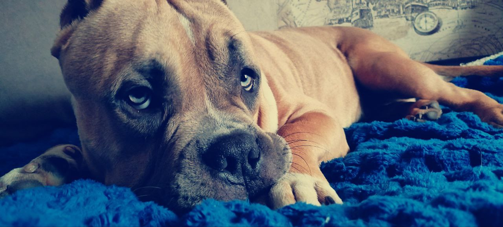
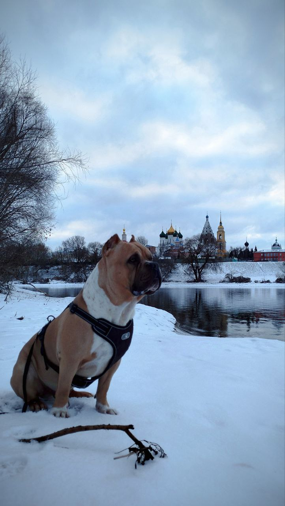

Возраст: 1,5 года
Окрас: Лиловый (да-да, вы не ослышались!)
Особая примета: Голубые глаза, которые могут свести с ума любого
Знакомьтесь, Зевс! Этот пушистый бог грома и молний обладает невероятной харизмой и силой… храпа. Да, вы правильно поняли: когда Зевс засыпает, лучше надеть беруши, потому что его храп способен разбудить даже мертвого. Но не пугайтесь, ведь днем этот маленький гигант превращается в самого энергичного и игривого питомца, которого вы когда-либо видели. Его любимое занятие? Гонять мячик до потери пульса (вашего, конечно). А еще он обожает устраивать гонки на своей роскошной лиловой шкурке, вызывая зависть у всех окружающих собак.
Прививки у Зевса все в порядке, так что можете смело звать нас в гости или же поиграть на прогулке. Только учтите: если вдруг решите устроить вечеринку, позаботьтесь о том, чтобы гости были готовы к его концертам ночью. В общем, если вы мечтаете о питомце, который будет радовать вас каждый день своими выходками и громким "песнопением", то американский булли — ваш идеальный выбор!
Подробнее о породе